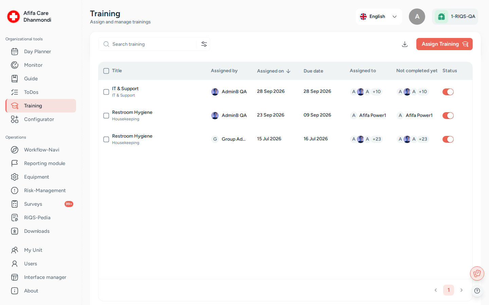

Training¶
In one sentence: Build short online trainings with test questions, assign them to the right people with a due date, and see who has passed and who has not. Menu: Training (people who only take trainings open them from their Workflow-Navi) · Status: Live

Training: assigned trainings, who still has to complete them, and status. Screens show test data.
What it is¶
Every practice has things staff must know and prove they know: hygiene rules, how to use a device, data protection. Training in RIQS is a simple way to do this online. It works like a short quiz with reading material.
It has two parts:
- The training module is the content. It has a description, optional documents or links, and multiple-choice questions with the correct answers marked. It also has a Fulfilment Level: the percentage of correct answers needed to pass (for example 80 %). Training modules are built in the Configurator, under Configurator, tab Trainings.
- The training assignment is what you manage in the Training menu. You pick a module, choose the units and people who must take it, and set a due date. RIQS then tells those people, and keeps track of who has passed.
People take the training, see right away whether they passed, and can try again as often as needed. Managers see a list of who has completed the training and who has not, and can download a report as proof, for example for an inspection.
Key terms¶
| Term | Meaning |
|---|---|
| Training module | The content: description, attachments and questions. Built in the Configurator. |
| Training (assignment) | A training module given to units and people, with a due date. This is what the Training list shows. |
| Topic | The subject area of the training (for example Topic 1 to Topic 10 as set up for your organisation). Used to find and filter trainings. |
| Sector / Sub group | Further grouping of trainings, shown as columns in the list. |
| Fulfilment Level | The pass mark, from 0 to 100 %. Shown in the details as Criteria for completion. |
| Assignment | Who must take the training: all employees of the unit, selected users, or selected User-Groups (Power User, Management, Professional). |
| Supervisory group | The people who follow the training (Management). |
| Attempt / tries | Each time a person submits the training. All attempts are kept. |
| Best Score | A person's highest score. This is the score that counts. |
| Completed / Not completed yet | Completed means the person's best score reached the Fulfilment Level. |
| Active / Inactive | An inactive training is switched off but kept. |
Who uses it¶
| Role | What they typically do here |
|---|---|
| RiQS Administrator | Supports clients. Can see and manage trainings and delete them, also in audit-safe mode. |
| Group Administrator | Assigns trainings to many units at once and follows progress. |
| Administrator | Same as Group Administrator for their own organisation. |
| Power User | Assigns trainings in their unit (or several units), follows progress, edits and deletes trainings. |
| Management | Assigns trainings, follows progress, edits and switches trainings on or off. Cannot delete trainings. Takes trainings assigned to them. |
| Professional | Takes the trainings assigned to them, from the Workflow-Navi. Sees only their own results. Does not see inactive trainings or reports. |
How it works¶
- Build the module. In the Configurator, someone creates the training module: title, sector, topic, Fulfilment Level, description, attachments and questions.
- Assign it. In Training, a manager clicks Assign Training, picks the topic and module, the units, the people and a due date.
- People are told. Each assigned person gets a task in their Workflow-Navi and an email.
- People take it. They open the training, read the material, click Start Training, answer all questions and click Submit.
- Instant result. RIQS shows Training Passed! or Training Not Passed with the percentage reached. If they did not pass, they can try again.
- Follow up. Managers see per training how many people have not completed it yet, look at each answer, and download reports.
From the point of view of one person:
not yet started → Incomplete (tried, not passed yet) → Completed (passed)
The training itself is either Active or Inactive. The due date shows as End in (days left) or Overdue by (days late). The due date does not block anyone from taking the training late.
How to …¶
How to create a training module¶
Who can do this: see the Configurator page 1. Go to Configurator and open the Trainings tab. Click Create Training. 2. Basic Information: enter Title, sector, Topic and Fulfilment Level (0–100). Add a description and attachments if you like. 3. Choose which organisations and units can use the module. 4. Add questions. For each question, add options with Add Option, and mark at least one option as correct (several can be correct). You can add an explanation to each option and attach files to questions and options. 5. Use Add More Question until done, then save.
Result: the module can now be picked when assigning a training.
How to assign a training¶
Who can do this: RiQS Administrator, Group Administrator, Administrator, Power User, Management 1. Open Training and click Assign Training. 2. Select the topic, then select the training module. The training takes its title from the module. 3. Select the unit. You can pick several units or use Select all units (see Open questions). 4. Under Assignment, either leave it as "The training is assigned to all employees", or choose Select user and/or Select User-Groups. 5. Pick the Due Date and click Save.
Result: the training appears in the list. Assigned people get a Cockpit task and an email. A person who belongs to several selected units gets the training only once.
How to take a training¶
Who can do this: anyone the training is assigned to, in any role (see Open questions) 1. Open the task in your Workflow-Navi (or open the training from the list). 2. Read the description and attachments. Click Start Training. 3. Answer every question. Questions and answer options appear in random order. Each question may have more than one correct answer, and the screen does not tell you how many. 4. Click Submit.
Result: you see Training Passed! or Training Not Passed with your percentage. If you did not pass, start again. Your best score is kept. Once you pass, any Training To-Do for it is marked done automatically.
How to follow progress¶
Who can do this: RiQS Administrator, Group Administrator, Administrator, Power User, Management 1. Open Training. The list shows title, sector, sub group, Assigned to, Not completed yet, Assigned On, Due Date and Status. 2. Search by name, unit or topic, or click Filters (topic, sector, assignment, submitted by, due date, required completion rate, Active / Inactive, and Completed / Not completed). 3. Click a training to open Training Details. Completed response lists who passed. Pending response lists who has not. 4. Click a person's entry to see each attempt: score, number of tries and their answers.
Result: you know who still has to complete the training.
How to download a training report¶
Who can do this: RiQS Administrator, Group Administrator, Administrator, Power User, Management 1. In the list, click Download Report for an overview of trainings. Or open a training and use Download Report in its menu for the details of that one training.
Result: RIQS prepares the report ("Training report creation in process") and downloads it.
How to edit, deactivate or delete a training¶
Who can do this: edit and deactivate: RiQS Administrator, Group Administrator, Administrator, Power User, Management. Delete: RiQS Administrator, Group Administrator, Administrator, Power User. In audit-safe mode, a training that is already assigned can only be deleted by the RiQS Administrator. 1. Open the training and use its menu: Edit Training, Inactive Training / Activate Training, or Delete. 2. In Edit Training you can change the title, due date, units and people. The module itself cannot be changed here. 3. To delete several trainings at once, tick them in the list and click Delete, then confirm.
Result: changes are saved. A new title is also copied to the related To-Dos.
Rules to know¶
- Assigning needs a topic, a module, at least one unit and a due date.
- Pass rule: a person passes when their best score reaches the module's Fulfilment Level. The score is the share of multiple-choice questions answered fully correctly. A question only counts as correct if exactly the right options are ticked.
- All questions must be answered before Submit works.
- There is no limit on attempts. Every attempt is stored and shown in the response history.
- Assigned people get an email when an active training is assigned or updated, and a Cockpit task.
- A Training To-Do (in Open Items) can only go to people who have not already passed that training. Passing the training completes the To-Do.
- A training with different participant groups per unit cannot be edited in the drawer. The app asks you to contact support.
- Delete in the regular version: RiQS Administrator, Group Administrator, Administrator and Power User. In audit-safe mode, a training that is already assigned can only be deleted by the RiQS Administrator.
- Professionals do not see the Training list. They reach their trainings through the Cockpit and see only their own results. They do not see inactive trainings.
Who can do what¶
| Action | RiQS Administrator | Group Administrator | Administrator | Power User | Management | Professional |
|---|---|---|---|---|---|---|
| Open the Training list, search, filter | ✅ | ✅ | ✅ | ✅ | ✅ | ❌ (Cockpit only) |
| Assign a training | ✅ | ✅ | ✅ | ✅ | ✅ | ❌ |
| Assign to several units at once | ✅ | ✅ | ✅ | ✅ (see Open questions) | ✅ (see Open questions) | ❌ |
| Edit a training | ✅ | ✅ | ✅ | ✅ | ✅ | ❌ |
| Activate / deactivate | ✅ | ✅ | ✅ | ✅ | ✅ | ❌ |
| Delete (regular, or audit-safe and not yet assigned) | ✅ | ✅ | ✅ | ✅ | ❌ | ❌ |
| Delete (audit-safe, already assigned) | ✅ | ❌ | ❌ | ❌ | ❌ | ❌ |
| View training details and everyone's answers (all completed trainings) | ✅ | ✅ | ✅ | ✅ | ✅ | Own only |
| See inactive trainings | ✅ | ✅ | ✅ | ✅ | ✅ | ❌ |
| Take an assigned training | If assigned (see Open questions) | If assigned (see Open questions) | If assigned | If assigned | If assigned | If assigned |
| See own result, attempts and best score | ✅ | ✅ | ✅ | ✅ | ✅ | ✅ |
| Download reports | ✅ | ✅ | ✅ | ✅ | ✅ | ❌ |
| Receive assignment notification | If assigned | If assigned | If assigned | ✅ | ✅ | ✅ |
Connected modules¶
- Configurator: training modules (questions, answers, Fulfilment Level, attachments) are built there.
- Cockpit: assigned people find their trainings here as tasks.
- Open Items: Training To-Dos follow the training assignment and close when the person passes.
- Users: the units, users and user groups you assign to come from here.
- Reports & downloads: training overview and training detail reports.
Open questions¶
- Qualifications. Users have a Qualifications section in their profile, and the organisation's group builder shows an "Education Group" catalogue meant for the Training module. Passing a training does not update either one today. Should a passed training be recorded as a qualification, and is the Education Group catalogue planned?
- Pass mark at exactly the Fulfilment Level. The training screen counts a person as passed when the score equals the Fulfilment Level. The stored "completed by" list counts them only when the score is higher. So someone with exactly 80 % on an 80 % training may show as passed in one place and not in another. Which rule is right?
- Power Users, Management and several units (role table vs feature list). The role table lets every role that can assign a training do so without a unit limit. The feature list says only administrators may assign a training to several units. This page follows the role table. Please confirm.
- Group Administrator and RiQS Administrator taking trainings (role table vs feature list). The role table says they can complete and view assigned trainings like everyone else. The feature list says they only see other people's answers and cannot start a training. This page follows the role table. Please confirm.
- Save without submitting. The feature list mentions "save or submit". The app only has Submit, so a half-done attempt cannot be saved. Is a save option still wanted?
- Default topic. The feature list asks for "Topic 0 Standard" to be pre-selected when assigning, and for a topic filter defaulting to "all". This is not visible in the current assign drawer. Is it still required?
- Inactive and overdue trainings. Can a person still start a training that has been set to Inactive, or that is past its due date? The app does not clearly block either case.
- Topic names. Topics show placeholder names such as "Topic 1" to "Topic 10". What are the real on-screen names?
- File-upload questions. The answer screen can show file-upload questions, but the module builder only offers multiple-choice. File answers are not scored. Is the file-upload question type still in use?
Last reviewed: 2026-10-26